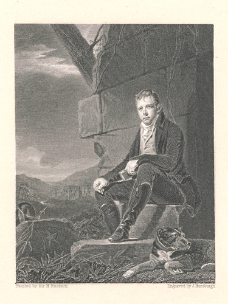

<< Back

Horsburgh originally engraved Raeburn's 1808 portrait of Scott for the 2nd edition of J.G. Lockhart's Life of Scott in 1837. The print above is the frontispiece to the Centenary Edition of Waverley (Edinburgh: Adam and Charles Black. 1886).